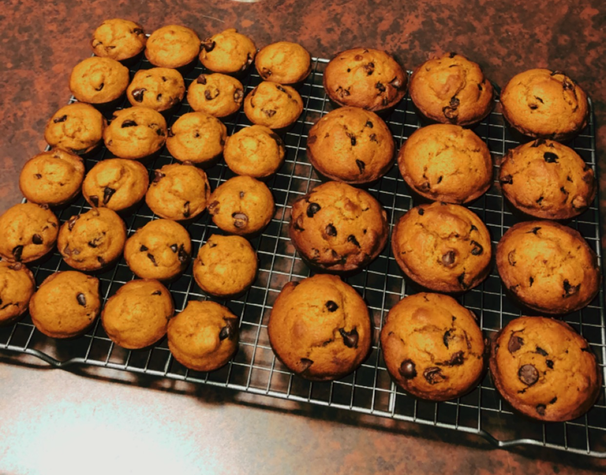

Egg wash: 1 large egg beaten with 1 tablespoon milk
Now Lets Put it All Together!
For the Pumpkin Pie Filling: Whisk the pumpkin, 3 eggs, and brown sugar together until combined. Add the cornstarch, salt, cinnamon, ginger, nutmeg, cloves, pepper, cream, and milk. Vigorously whisk until everything is combined. Filling will be a little thick.
Preheat oven to 375°F
Roll Out the Chilled Pie Crust: Remove 1 disc of pie dough from the refrigerator. On a lightly floured work surface, roll the dough out into a 12-inch circle. Make sure to turn the dough about a quarter turn after every few rolls. Carefully place the dough in to a 9-inch pie dish. Tuck it in with your fingers, making sure it is smooth. With a small and sharp knife, trim the extra overhang of crust and discard. Crimp the edges with a fork or flute the edges with your fingers, if desired. Brush edges lightly with egg wash mixture. Line the pie crust with parchment paper. (Crunch up the parchment paper first so that you can easily shape it into the crust.) Fill with pie weights. Make sure the weights are evenly distributed around the pie dish. Pre-bake the crust for 10 minutes. Carefully remove the parchment paper and pie weights.
Pour pumpkin pie filling into the warm pre-baked crust. Only fill the crust about 3/4 of the way up. Bake the pie until the center is almost set, about 55-60 minutes give or take. A small part of the center will be wobbly - that's okay. After 25 minutes of baking, be sure to cover the edges of the crust with aluminum foil or use a pie crust shield to prevent the edges from getting too brown. Check for doneness at minute 50, and then 55, and then 60, etc.
Once done, transfer the pie to a wire rack and allow to cool completely for at least 3 hours. Serve pie with whipped cream if desired. Cover leftovers tightly and store in the refrigerator for up to 5 days.
You can also use extra pie crust to make leaves to decorate your pie as well as adding sugared cranberries much like in the images below!
Disclaimer: This is not my recipe or images, I found this recipe on sally's baking addiction. Above is the link the to original recipe. Below is a short video that you can watch!
Pumpkin Chocolate Chip Muffins

Ingredients
2 eggs
1 cup granulated sugar
1 cup pumpkin puree
3/4 cup vegetable oil
1 1/2 cups all purpose flour
1 teaspoon baking soda
1/2 teaspoon baking powder
1 1/2 teaspoons pumpkin pie spice
1/2 teaspoon vanilla extract
1/4 teaspoon salt
1 1/2 cups semisweet chocolate chips
cooking spray
Directions
Preheat the oven to 400 degrees F. Coat a 12 cup muffin tin with cooking spray, or you can use paper liners.
Place the eggs, sugar, pumpkin puree and oil in a bowl. Whisk until smooth.
Add the flour, baking soda, baking powder, pumpkin pie spice, vanilla extract and salt to the bowl. Stir until just combined.
Fold in 1 cup of chocolate chips.
Divide the batter evenly among the 12 muffin cups and sprinkle the remaining chocolate chips over the tops of the muffins.
Bake for 15 minutes, or until lightly browned and a toothpick inserted in the center of a muffin comes out clean.
Cool for 5 minutes in the pan, then transfer the muffins to a wire rack to cool completely.
Serve, or store the muffins in an airtight container for up to 5 days.